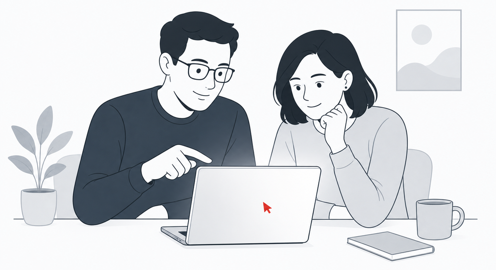
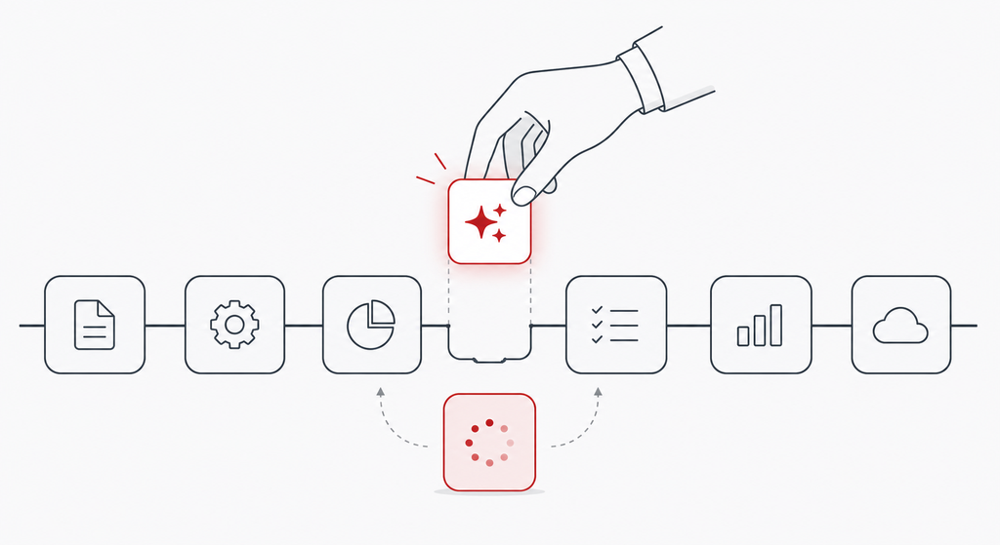
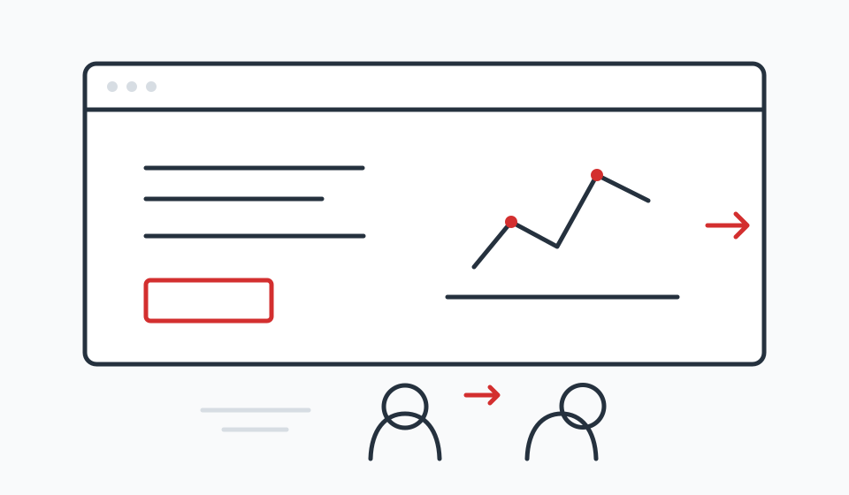
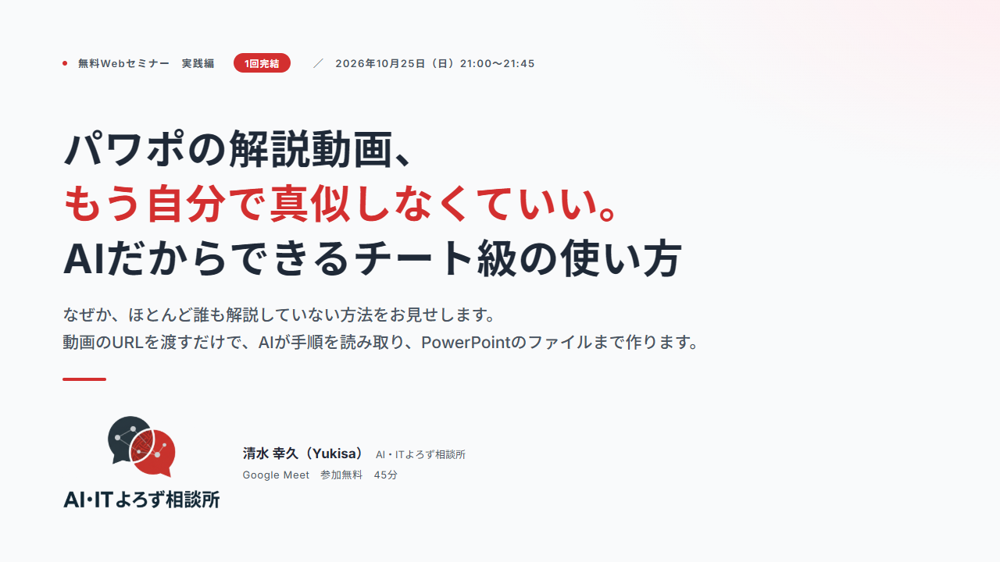

こんなお悩みに

使われていない
ChatGPTやCopilotを入れたものの、使っているのは一部の人だけ。多くの社員は試したきりになっている。

線引きが分からない
情報漏えいが心配で、何を入力してよくて、何がだめなのかを社員に説明できない。
教える人がいない
社内に詳しい人がいない。何から、どの順番で教えればいいか分からない。
中小企業向け 生成AI研修
「導入したけれど、ほとんど使われていない」「どこまで任せていいのか分からない」。ツールの機能紹介で終わらせず、社員の方が自分の仕事でAIを使えるようになるところまでを支援します。


ChatGPTやCopilotを入れたものの、使っているのは一部の人だけ。多くの社員は試したきりになっている。

情報漏えいが心配で、何を入力してよくて、何がだめなのかを社員に説明できない。
社内に詳しい人がいない。何から、どの順番で教えればいいか分からない。
入門研修だけのご依頼も、ハンズオンや定着サポートとの組み合わせも可能です。内容は事前に伺った業務に合わせて調整します。
上記メニューを通常料金の半額でお受けします。その代わりに、研修後のアンケートへのご協力と、事例としての掲載（社名または業種での掲載。どちらにするかはご相談のうえ決めます）をお願いしています。
清水幸久（AI・ITよろず相談所）。CADソフトのアプリケーションエンジニアとして約25年、お客さまの現場でソフトを使えるようにする支援をしてきました。研修でも「機能を教える」より「現場で使える形にする」ことを大切にしています。
2026年6月から毎月、生成AI・Copilotの無料ウェビナーを開催しています。過去の内容は次のページでご覧いただけます。
公開済みの録画はYouTubeチャンネルでもご覧いただけます。

はい。業種は問いません。事前に伺った業務に合わせて、演習の題材を用意します。
はい。貴社で使っている、または使う予定のAIに合わせて内容を組み立てます。
対応します。交通費を実費で、宿泊が必要な場合は宿泊費も実費で別途いただきます。
はい。料金は記載のとおりですが、人数が少ない分、一人ひとりの業務に踏み込んで進められます。
個人向けの使い方や仕事への導入は、AI活用の個別相談でご案内しています。